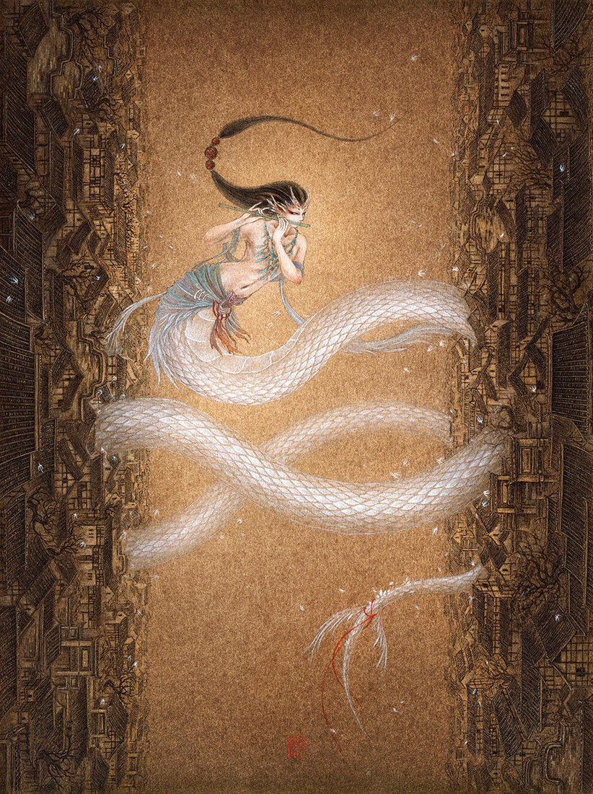

神荼
神荼是中国民间传说中能制伏恶鬼的神人，最开始出现在上古神话中。
一般位于左边门扇上，身着斑斓战甲，面容威严，姿态神武，手执金色战戟。故中国民间称他为门神。表达了古代人民消灾免祸、趋吉避凶的美好愿望。
郁垒
郁垒是汉族民间信奉的神仙。 [1] 古代人们为了驱凶，在门上画神荼、郁垒，亦有驱鬼避邪之效果。左扇门上叫神荼，右扇门上叫郁垒，汉族民间称他们为门神。

腾蛇
腾蛇，一名“螣蛇”，也叫飞蛇，是一种会腾云驾雾的蛇，是一种仙兽。又一说为星宿之一，有“勾陈腾蛇”之说。出自《山海经·中山经》